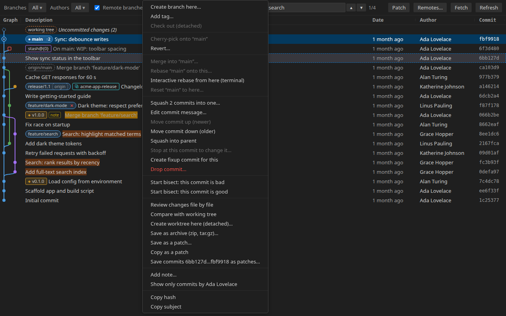

Create and apply git patches (format-patch, apply, am)
A patch is a change written down as text, which someone else can apply to their copy of the repository without a shared remote: attach it to an issue, paste it in a chat, email it. Git has two ways to make one and two ways to apply one, and the wrong pair is the usual reason a patch “does not apply” or arrives without its commit message.
Quick answers
| I want to… | Run |
|---|---|
| Make a patch of one commit | git format-patch -1 <commit> |
One file per commit on feature that is not on main | git format-patch main..feature -o patches/ |
| All of them in one file | git format-patch main..feature --stdout > feature.patch |
| Patch my uncommitted changes, staged and unstaged | git diff --binary HEAD > changes.diff |
| Check that a patch applies, changing nothing | git apply --check changes.diff |
| Apply a diff | git apply --3way changes.diff |
| Undo a diff I applied | git apply -R changes.diff |
Recreate the commits from format-patch files | git am --3way patches/*.patch |
We ran every command on this page with git 2.53 in throwaway repositories and quote the output we saw.
Patches from commits: git format-patch
git format-patch writes each commit as an email-style file, a mailbox, with the author, date and full message alongside the diff.
git format-patch -1 HEAD 0001-Add-greeting.patch git format-patch main..feature -o patches/ patches/0001-Fix-the-parser.patch patches/0002-Add-greeting.patch git format-patch main..feature --stdout > feature.patch
main..feature is the commits on feature that are not on main; --stdout puts the series in one file. Each patch starts with From <hash>, From: Ann Lee <ann@example.com>, Date: and Subject: [PATCH 1/2] Fix the parser.
Merge commits are skipped, without an error. git format-patch -1 <merge> quietly wrote the newest non-merge commit behind the merge instead, and a range across a merge includes the merged branch’s commits one by one. For what a merge brought in, use git diff --binary <merge>^1 <merge>.
Uncommitted changes: git diff
git diff > changes.diffhas only unstaged changes; anything yougit add-ed is missing.git diff --binary HEAD > changes.diffhas staged and unstaged changes, against the last commit.- Without
--binary, a binary file becomesBinary files /dev/null and b/logo.bin differ, which fails to apply:cannot apply binary patch to 'logo.bin' without full index line. - Untracked files are not included. Run
git add -N <file>(record the file as intended to be added, without staging its content) orgit addfirst.
format-patch or diff?
git format-patch | git diff | |
|---|---|---|
| Made from | Commits | Commits, the index or the working tree |
| Keeps author, date, message | Yes | No |
| Merge commits | Skipped | Diff against a parent |
| Applied with | git am (commits) or git apply | git apply only |
Commits the other person should keep as commits: format-patch. Work in progress, or a change they will commit themselves: git diff.
Apply a diff: git apply
Dry-run first. git apply --check prints nothing when the patch fits, otherwise error: patch failed: app.txt:1 and error: app.txt: patch does not apply. git apply is all or nothing: if one file fails, none changes.
git applyedits the working tree and stages nothing; new files show up untracked.git apply --3waystages the result. Where your lines differ, it merges, and on a real clash leaves conflict markers and saysApplied patch to 'app.txt' with conflicts.It refuses when a file it touches has unstaged changes:error: big.txt: does not match index, and nothing is applied, even though it then printsFalling back to direct application.... Plaingit applyworked in the same state.git apply -Rapplies the patch in reverse, undoing it.
Apply commits: git am
git am (“apply mailbox”) makes one commit per format-patch file, keeping the author, author date and message; you become the committer.
git am --3way patches/*.patch Applying: Fix the parser Applying: Add greeting
- Staged changes stop it:
fatal: Dirty index: cannot apply patches (dirty: app.txt). Git still leaves an am session behind, and the nextgit amfails withprevious rebase directory .git/rebase-apply still exists.git am --abortcleared it and kept our staged change. - A plain diff fails with
Patch format detection failed.It has no message to commit with; usegit apply. - On a conflict (
Patch failed at 0001 Fix the parser), resolve the file,git addit and rungit am --continue;git am --skipdrops that patch;git am --abortputs the branch back. Without--3way,git amdoes not merge and the patch just fails.
VS Code’s built-in Git extension (1.147) has no command to create or apply a patch: its package.json and package.nls.json do not mention one. Use the terminal, or the graph below.
Save and apply patches in Mergeline
Mergeline is a free, MIT-licensed git graph for VS Code. From version 0.16 it saves and applies patches from the graph and picks the right git command for you.
- A commit: right-click → Save as a patch… or Copy as a patch (
git format-patch -1). On a merge it reads Save as a patch (diff against first parent)…. - A series: select one commit, Ctrl-click (Cmd on macOS) another, right-click → Save commits <a>…<b> as patches…: both ends included, one mailbox file, only when they are on one line of history. The comparison pane offers Save this diff as a patch… · Copy (
git diff --binarybetween them). - A branch other than the current one, local or remote: Save commits not on “main” as patches… (
git format-patch main..branch). The Changes since it split pane has Save these commits as patches…. - Uncommitted changes row: Save changes as a patch…, Copy changes as a patch, Apply a patch…. A stash: Save stash as a patch….

- Open a patch. The toolbar’s Patch button has Apply patch from a file… and Apply patch from the clipboard… (plus Save and Copy uncommitted changes as a patch); the Command Palette has Mergeline: Apply Patch…. Several
.patchfiles picked together apply in name order (0001-,0002-…). - Choose. The picker shows the first subject and “N files changed, +X −Y”, then Create the N commits on “main” (
git am --3way, forformat-patchmailboxes), Apply the changes only, no commit (git apply --3way, falling back to plaingit applywhen a touched file has unstaged changes) or Reverse it (undo these changes) (git apply -R). - If
git amstops on a conflict, the bar above the graph shows it with the conflicted files and Continue, Skip, Abort.
A pasted patch that lost its final newline, which git rejects as corrupt patch at line N, is fixed before applying.
Mergeline is not on the VS Code Marketplace yet. Download the .vsix from GitHub and run Extensions: Install from VSIX… (full steps).
FAQ
What is the difference between a .patch and a .diff file?
Only the name. A file from git format-patch starts with From <hash> and mail headers and can become a commit with git am; one from git diff starts with diff --git and needs git apply.
Why does git say “patch does not apply”?
The lines around a change are not what your file has, because your copy is older or newer than the patch’s. Try git apply --3way, which merges and leaves conflict markers instead. corrupt patch at line N is different: the file is damaged, often a missing last newline or a line wrapped by an email client.
How do I include new, untracked files?
git add -N <file> (or git add), then git diff --binary HEAD; or commit and use git format-patch.
How do I send commits to someone without a shared remote?
git format-patch main..feature --stdout > feature.patch, send the file, and they run git am --3way feature.patch. Messages, authors and author dates survive; the hashes differ, because they are the committer.
Related: compare branches and commits, cherry-pick a commit, rebase or merge stopped with conflicts and git stash.